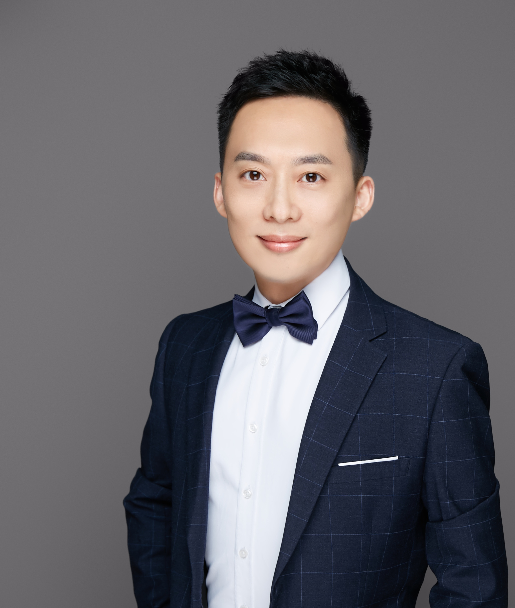
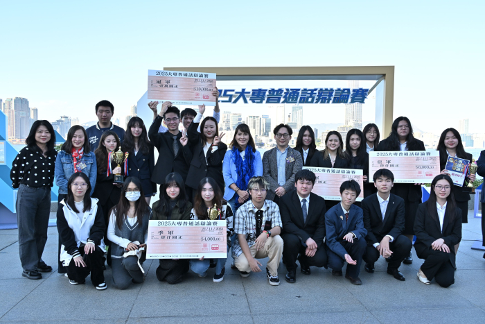
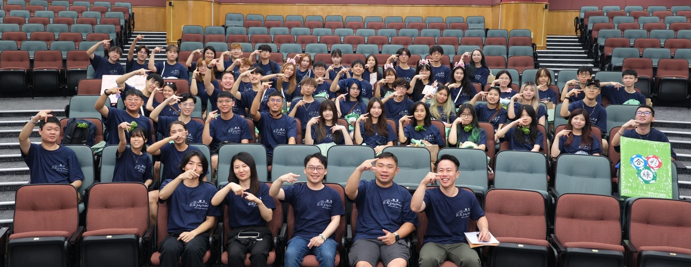
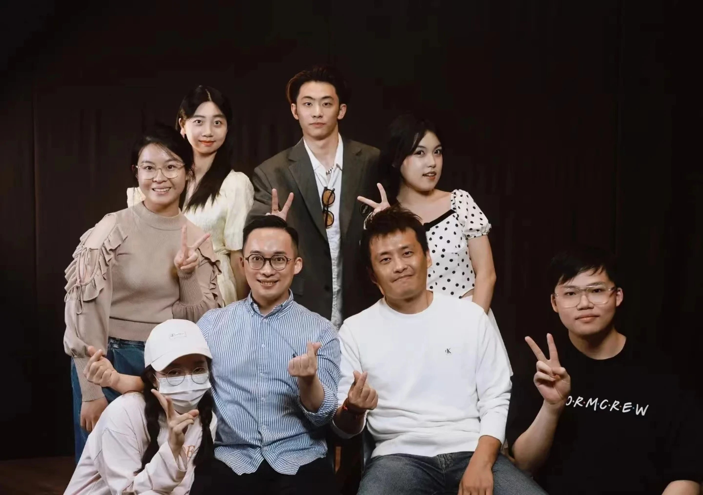

Senior Lecturer & CHAMPINE Programme Coordinator, the Chinese Language Education and Assessment Centre (CLEAC)
Warden, the Jockey Club Hostel (F), Office of Student Affairs (OSA)
Warden, the Jockey Club Hostel (F), Office of Student Affairs (OSA)
中國語文教學與測試中心 高級講師 及 燦品中文+統籌
學生事務處下轄賽馬會驥德堂（F座）舍監
學生事務處下轄賽馬會驥德堂（F座）舍監
Lingnan University / 嶺南大學
As a Senior Lecturer and Coordinator of the CHAMPINE Programme at the Chinese Language Education and Assessment Centre (CLEAC), alongside my role as Warden of the Jockey Club Hostel (F) of Office of Student Affairs (OSA) at Lingnan University, I am deeply committed to advancing Chinese language education, cultural heritage, and Putonghua proficiency. My career bridges academic excellence with student residential leadership, driven by a passion to inspire youth, foster cross-cultural appreciation, guide students to achieve outstanding success on national platforms, and champion sustainable social development (ESG) through dedicated youth service.
現任嶺南大學中國語文教學與測試中心（CLEAC）高級講師及「燦品中文+（CHAMPINE）」統籌，並擔任學生事務處下轄賽馬會驥德堂（F座）舍監。本人深耕於中國語文教育、中華文化傳承與普通話測試領域，始終秉持「作育英才，服務社會」的信念，積極推動社會可持續發展（ESG）與青年服務，致力透過創新的教學模式與豐富的文化體驗啟發學生潛能，並帶領學子在全國性大型比賽中屢創佳績。

01
Education
學歷背景Ph.D.
Doctor of Philosophy
哲學博士（中國古典文學）
in Chinese Classical Literature
Beijing Normal University
Beijing Normal University
北京師範大學
M.A.
Master of Arts
文學碩士（語言學）
in Linguistics
City University of Hong Kong
City University of Hong Kong
香港城市大學
B.A. (Hons)
Bachelor of Arts
榮譽文學士（語言學及語言科技）
in Linguistics & Language Technology
City University of Hong Kong
City University of Hong Kong
香港城市大學
02
Media & Exhibitions
媒體報道與精選活動Award Reports / 獎項報道
- 全國大學生藝術展演National University Student Art Exhibition
- 齊越節暨全國大學生朗誦大會Qiyue Recitation Festival & National Recitation Competition
- 蘇港澳高校中華經典誦讀展演Jiangsu, HK & Macau Chinese Classics Recitation
- 喚醒耳朵展演——深港澳大學生展演"Awakening the Ears" Shenzhen, HK & Macau Exhibition
03
Honors & Awards
個人獎項殊榮

2024
Teaching Excellence
優秀指導教師獎
The 7th National Student Art Exhibition and Performance Competition. Ministry of Education of the PRC.
全國第七屆大學生藝術展演。中華人民共和國教育部。
2024–2025
Gold Award
無障礙網頁金獎（網站組別）
Digital Accessibility Recognition Scheme for CLEAC’s New Official Website. HKIRC & Digital Policy Office.
中國語文教學與測試中心新官方網頁。由香港互聯網註冊管理有限公司主辦。
2023
Outstanding Work & Teaching
優秀作品及優秀指導教師獎
24th & 25th Qiyue Recitation Festival & National University Student Recitation Competition.
第24屆及第25屆齊越朗誦藝術節暨全國大學生朗誦大會。
2023
Nomination Award
提名獎（團隊負責人）
Selection Panel of the 2023 UGC Teaching Award. Nominated by Lingnan University.
2023年度大學教育資助委員會（教資會）傑出教學獎遴選委員會（由嶺南大學提名）。
2021–2022
Teaching Excellence
TEAS優異獎及優秀指導教師獎
Merit (Team) for TEAS (Lingnan Univ); Teaching Excellence at 22nd & 23rd Qiyue Recitation Festival & 6th National College Art Exhibition.
嶺南大學教學卓越及傑出服務獎（團隊優異獎）；全國第六屆大學生藝術展演、第22及23屆齊越節優秀指導教師獎。
04
Leadership & Service
大學、專業及社會服務


University & Department 大學與部門服務
2023–Pres
Warden, Jockey Club Hostel (F)
賽馬會驥德堂（F座）舍監
Leading residential education and pastoral care. Also served as Acting Warden for Hostel B (Jul 2024, Oct 2025).
領導舍堂教育，並曾於2024年7月及2025年10月兼任B座宿舍代理舍監。
領導舍堂教育，並曾於2024年7月及2025年10月兼任B座宿舍代理舍監。
2020–Pres
Senior Lecturer & Acting Head
CLEAC 高級講師及代理主任
Coordination of Co-curricular Programs (CHAMPINE). Frequently served as Acting Head of CLEAC during multiple periods (2024–2026).
負責燦品中文+統籌，並於2024至2026年間多次擔任CLEAC代理主任。
負責燦品中文+統籌，並於2024至2026年間多次擔任CLEAC代理主任。
2024–2026
Training & Camp Coordinator
內部培訓與文化營統籌
Coordinated "Gen AI for Workplace Competitiveness" Workshops for OSA (2025, 2026) and CLEAC staff trainings featuring Chen Qiufan & Prof. Lian Yuren.
統籌學生事務處「生成式 AI 提升職場競爭力」工作坊，以及陳楸帆與連育仁教授之教職員培訓。
統籌學生事務處「生成式 AI 提升職場競爭力」工作坊，以及陳楸帆與連育仁教授之教職員培訓。
2024–Pres
Committees & Language Examiner
大學委員會與語言測試考官
Member of Catering Tender Panel (2025-) & Arts Biennale WG (2024-25). Appointed Tester for PSC, and Oral Examiner/Rater for CCCT & ACELO.
擔任餐廳投標評估及藝術雙年展小組成員；國家語委普通話水平測試（PSC）及 CCCT/ACELO 考官。
擔任餐廳投標評估及藝術雙年展小組成員；國家語委普通話水平測試（PSC）及 CCCT/ACELO 考官。
Academic & Community 學術與社會服務
2024–2025
Major Competition Judge
大型比賽決賽評委
Final Judge for "Little Mouths, Big Wisdom" Radio Drama Comp (2025), HK Sec. School Putonghua Speech Comp (2025), and 53rd Int. Letter-Writing Comp HK (2024).
擔任「小嘴巴．大智慧」廣播劇比賽、全港中學生演講比賽及國際常規書信寫作比賽決賽評委。
擔任「小嘴巴．大智慧」廣播劇比賽、全港中學生演講比賽及國際常規書信寫作比賽決賽評委。
2018–2024
RTHK & Media Expert
香港電台職務與媒體專家
Program Advisor for Putonghua Channel (2022-2024) & Guest Host (2018-2020) at RTHK. Inter-Collegiate Putonghua Debate Final Judge.
曾任香港電台普通話台節目顧問、客席主持及大專普通話辯論賽決賽評委。
曾任香港電台普通話台節目顧問、客席主持及大專普通話辯論賽決賽評委。
2015–Pres
Education Bureau & Advisory
教育局與考評委員
Speaker for "Language in Film/TV" Seminars (HKEDB, 2023-24) & Scholar in 20th Anniv Promo (2023). Ad Hoc Comm Member (2015-19). Ext Examiner for HKMU LiPACE (2015-2020).
主講教育局「影視作品中的語言與文化」研討會；曾任普通話專責委員及香港公開大學LiPACE校外考官。
主講教育局「影視作品中的語言與文化」研討會；曾任普通話專責委員及香港公開大學LiPACE校外考官。
2023–2026
NGO & Social Mentorship
非政府組織與青年導師
Mentor for "Strive and Rise Programme" (2nd & 3rd Cohorts, 2024-25). Pres/Foundation Chair of Rotary Club of Eminence HK.
擔任「共創明『Teen』計劃」第二及第三期導師；香港匯賢扶輪社社長暨基金主委。
擔任「共創明『Teen』計劃」第二及第三期導師；香港匯賢扶輪社社長暨基金主委。
05
Scholarship & Curriculum
學術研究、專案與課程開發Curriculum Dev. & Professional Works / 課程與教材開發
- Credit Course DevelopmentDeveloped major courses including LCC3220 (Chinese Writing in the Workplace), LCC2250 (Chinese Xiqu Art), LCC1803 (Business Cantonese), and LCC1802 (Practical Cantonese).
開發 LCC3220、LCC2250、LCC1803 及 LCC1802 等多門學分課程。 - Curriculum ArchitectureDesigned the Minor Programme of Putonghua and established the Diagnostic and Exemption Test (DET).
設計普通話副修課程架構以及診斷及豁免測試（DET）。 - Textbooks & Assessment MaterialsRevised Basic, Practical, and Advanced Putonghua textbooks. Compiled the 3500 Common Characters for Putonghua list. Proofread Pinyin subtitles for HKEDB videos (2024).
修訂初、中、高階普通話教材，編寫《普通話3500個常用字表》，並為教育局校對影片拼音字幕。
Research & Grant Projects / 學術研究與撥款
- Ongoing Research (2020–Pres)Leading 5 projects: Written Chinese Proficiency Test in HK, Blended Learning in Chinese Courses, CLEAC Annual Evaluation, Putonghua Pronunciation Diagnostic Assessment (PPDA), and LGAS Attribute Study.
進行中：香港地區中文書面語測試、混合式學習、CLEAC年度評估、PPDA 及 LGAS 特質研究。 - Funded Projects (LEO & Tin Ka Ping)"Exploring Chinese Charisma" (HK$900k) & GBA "Characteristic Affection, Classical Aspirations" Research Project (HK$2.23M).
嶺南教育機構及田家炳基金會大灣區教學發展研究計劃（總額逾310萬港元）。 - Early Ed-Tech Projects (2005–2006)Pioneered Putonghua TTS system, Pinyin Converter (Biaoyinyi), and primary/secondary self-learning software.
早期完成普通話語音合成系統(TTS)、拼音轉換器及中小學自學軟件等技術專案。
Publications / 出版與期刊
- Hong Kong Wen Wei PoAuthored articles on Putonghua expressions and multimedia learning (2024).
於《香港文匯報》發表普通話用語及多媒體學習之相關文章。 - Academic JournalsEileen Chang's novel analysis published in 時代文學 & Heze Daily.
於《時代文學》及《菏澤日報》發表張愛玲小說分析等學術文章。
06
Mentorship
指導學生獎項與成就

"Continually striving to inspire Lingnan University students to participate in national tertiary-level competitions. Under my supervision, we achieved 36 major awards across prestigious national Chinese competitions (2020-2025)."
「致力啟發嶺南學子參與全國性高等教育競賽。在我的指導下，師生團隊於2020至2025學年期間，在四大最具代表性的全國中文競賽中勇奪36項重要殊榮；並指導學生於主流媒體發表文化考察專欄。」
「致力啟發嶺南學子參與全國性高等教育競賽。在我的指導下，師生團隊於2020至2025學年期間，在四大最具代表性的全國中文競賽中勇奪36項重要殊榮；並指導學生於主流媒體發表文化考察專欄。」
| Year 年份 | Exhibition / Publication 展演、比賽與發表 | Awardees / Authors 獲獎者與作者 | Award 獎項 |
|---|---|---|---|
| 2025 | Hong Kong Wen Wei Po (July 2025) 《香港文匯報》文化考察專欄 | Chen Zihan, Huang Jun 陳子涵、黃俊 |
Published Article 文章發表 |
| 2024–25 | 7th National Univ. Art Exhibition 全國第七屆大學生藝術展演 Ministry of Education, PRC | Yeung Choi-yee, Lam Sze-nga, Chow Lok-yi, Leung Wai-lam | Third Prize 三等獎 |
| Dr. ZHOU Bo 周博博士 | Teaching Excellence 優秀指導教師獎 |
||
| 2023–24 | 25th Qi Yue Recitation Festival 第25屆齊越朗誦藝術節 | Li Jiapeng, He Mushan, Tian Xuetong | Outstanding Work 優秀作品獎 |
| 2022–23 | 24th Qi Yue Recitation Festival 第24屆齊越朗誦藝術節 | LUI Kin Yee, ZHAN Aifan, ZHAO Sikun, TSANG Chi Hin | Best Performance 最佳藝術表現獎 |
| Dr. ZHOU Bo 周博博士 | Teaching Excellence 優秀指導教師獎 |
||
| Lingnan University 嶺南大學 | Outstanding Org. 優秀組織獎 |
||
| 2021–22 | 23rd Qi Yue Recitation Festival 第23屆齊越朗誦藝術節 |
Lui Kin-yee, Zhao Wenxuan Dr. ZHOU Bo 周博博士 |
Youth Spirit Award 青年風貌特別獎 Teaching Excellence 優秀指導教師獎 |
| Jiangsu, HK & Macau Classics 蘇港澳高校中華經典誦讀展演 | Zhan Aifan, Zhao Wenxuan | Youth Spirit Award 青年風貌特別獎 |
|
| "Awakening the Ears" Exhibition “喚醒耳朵——深港澳大學生展演” | Wang Heng, Xu Yanyuan, Yuen Chun Ho... | Outstanding Work 優秀作品獎 |
|
| 2020–21 | 6th National Univ. Art Exhibition 全國第六屆大學生藝術展演 |
Pun Hok Lam, Lee Wenxin... Dr. ZHOU Bo 周博博士 |
Third Prize 三等獎 Teaching Excellence 優秀指導教師獎 |
| 22nd Qi Yue Recitation Festival 第22屆齊越朗誦藝術節 |
Data Science Student Dr. ZHOU Bo 周博博士 |
Youth Spirit Award 青年風貌特別獎 Teaching Excellence 優秀指導教師獎 |